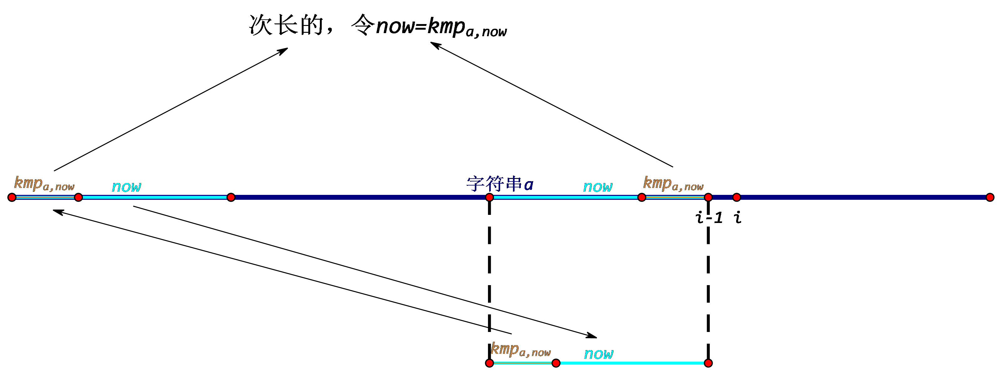

KMP是一种字符串匹配算法。此算法的核心在于\(kmp\)数组以及它的求法。
（以下约定字符串下标从\(1\)开始）
定义\(kmp\)数组：\(kmp_{a,i}\)表示字符串\(a\)的前缀\(a_{1\sim i}\)的最长相同真前后缀的长度，即\(kmp_{a,i}=\max\limits_{j\in[0,i),a_{1\sim j}=a_{i-j+1\sim i}}\{j\}\)。显然，\(kmp_{a,1}=0\)恒成立。例如若\(a=``\text{abacaabac''}\)，那么\(kmp_a=[0,0,1,0,1,1,2,3,4]\)。
给定一个字符串\(a\)，现在我们要求\(kmp_a\)。
\(\forall i\in(1,|a|]\)，假设已经知道了\(kmp_{a,1\sim i-1}\)，现在要求出\(kmp_{a,i}\)。考虑试试在\(a_{1\sim i-1}\)的一组相同真前后缀的后面同时加上\(1\)个字符，看看这\(2\)个字符相不相同。设当前试的的为\(a_{1\sim i-1}\)的长度为\(now\)的相同真前后缀。执行以下步骤：
如果往后加的\(2\)个字符（分别为\(a_{now+1},a_i\)）相等的话，则匹配成功，直接令\(kmp_{a,i}=now+1\)并结束（因为比它长的相同真前后缀都试过了）；否则找次长一点的\(a_{1\sim i-1}\)的相同真前后缀，不难发现\(kmp_{a,now}\)就是次长一点的长度（原因见下图），便令\(now=kmp_{a,now}\)。

不断重复第\(2\)步，如果中途没有结束，那么直到\(now=0\)的时候，令\(kmp_{a,i}=[a_1=a_i]\)并结束。
这样先令\(kmp_{a,1}=0\)，然后按上述方法从\(i=2\)到\(i=|a|\)递推，即可求出\(kmp_a\)。
求\(kmp\)数组的代码如下：（很短吧？很好写吧？很爽吧？
void kmp_init(){//求kmp数组
kmp[1]=0;//恒成立
for(int i=2;i<=n;i++){//从i=2递推到i=n
int now=kmp[i-1];//初始化now
while(now&&a[now+1]!=a[i])now=kmp[now];//重复第2步
kmp[i]=a[now+1]==a[i]?now+1:0;
}
}上述方法求\(kmp\)数组的时间复杂度是是线性的\(\mathrm O(|a|)\)。
证明：我们可以把\(now\)看成一个定义在for外面的变量来研究它的增减，kmp[i]=now+1;可理解成now++;，因为下一轮循环的时候就会执行now=kmp[i-1];。不难发现，for里的第\(2\)行while会使\(now\)进行不增变化（也就是可能不变，可能减少），第\(3\)行会使\(now\)增加\(0\sim 1\)。那么\(now\)增加\(1\)的次数为\(\mathrm O(|a|)\)，于是\(now\)减少也只能有\(\mathrm O(|a|)\)次机会了。所以总共就是\(\mathrm O(|a|)\)了。
KMP算法可以用来字符串模式匹配（这个Z算法和哈希也能做到线性复杂度）。看到网上很多blog都是用\(kmp\)数组来优化暴力匹配，但我有更好理解的方法（复杂度不变）。与Z算法类似，我们可以把模式串\(b\)隔一个不常用字符接到文本串\(a\)前面，即令\(c=b+`\text{!'}+a\)。然后求出\(kmp_c\)，从\(i=|b|+2\)到\(i=|c|\)扫一遍，如果\(kmp_{c,i}=|b|\)，那么在\(a\)的\(i-|b|+1-|b|-1=i-2|b|\)处匹配成功。
不仅如此，如果想专门求字符串\(a\)的某前缀的最长相同真前后缀的长度，哈希的复杂度就无异于暴力了（因为匹配成败没有单调性，不好二分）。Z算法稍微好一点，\(\forall i\in[1,|a|]\)，令\(\forall j\in [1,z_{a,i}],ans_{i+j-1}=\max(ans_{i+j-1},j)\)，这个可以用差分或线段树实现，复杂度都带\(\log\)，没有KMP的线性复杂度好。